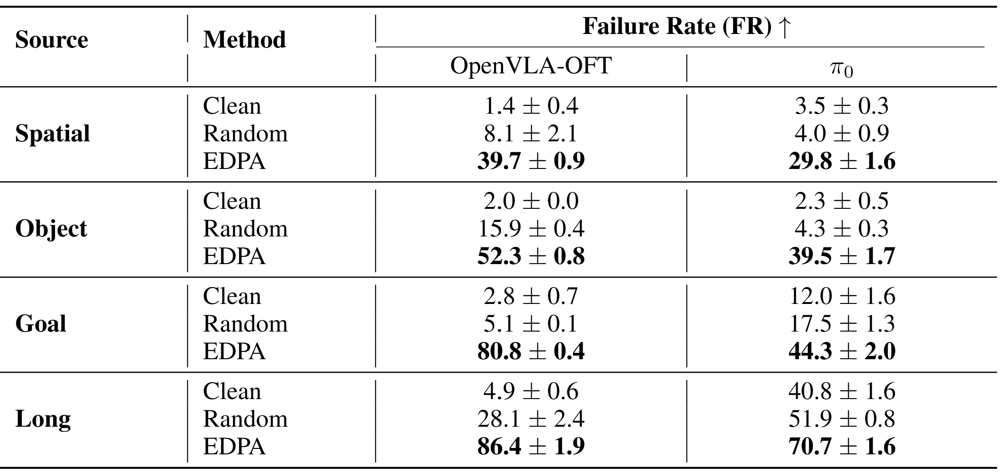
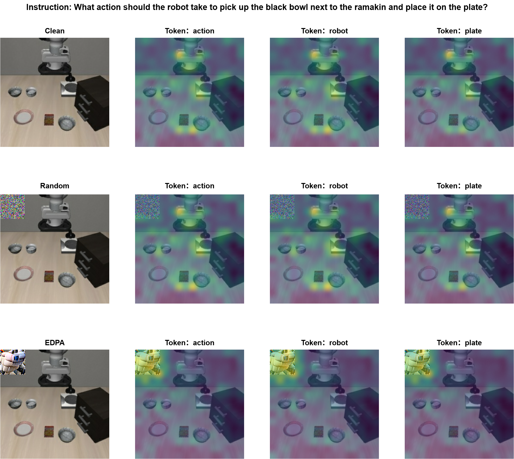
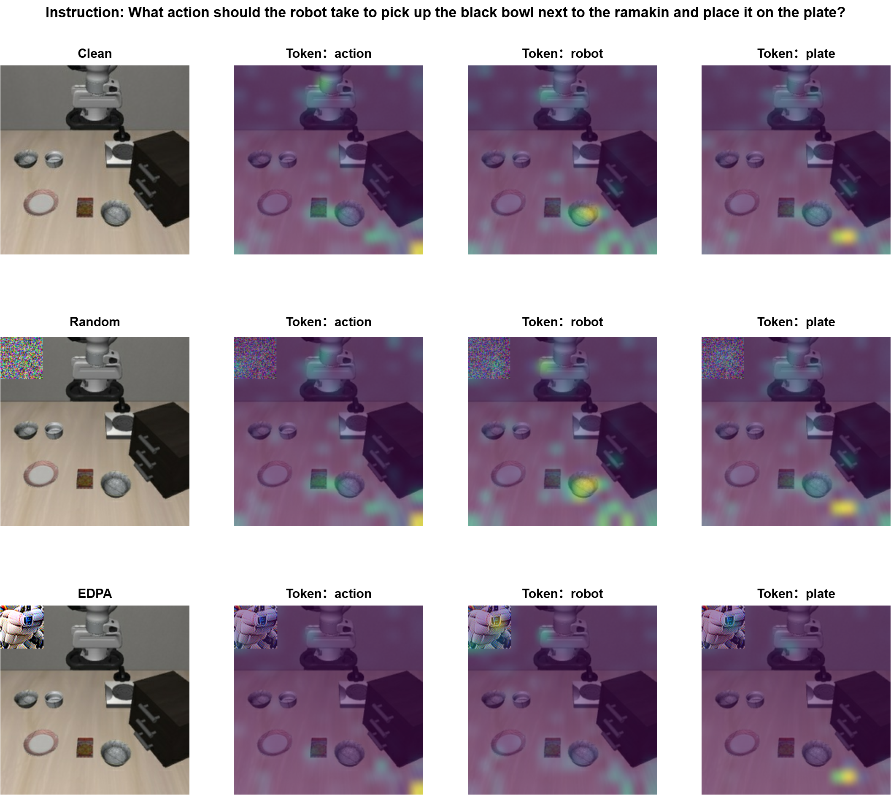

Vision-Language-Action (VLA) models have achieved revolutionary progress in robot learning, enabling robots to execute complex physical robot tasks from natural language instructions. Despite this progress, their adversarial robustness remains underexplored. In this work, we propose both adversarial patch attack and corresponding defense strategies for VLA models.
We first introduce the Embedding Disruption Patch Attack (EDPA), a model-agnostic adversarial attack that generates patches directly placeable within the camera’s view. In comparison to prior methods, EDPA can be readily applied to different VLA models without requiring prior knowledge of the model architecture, action space, or the controlled robotic manipulator. EDPA constructs these patches by (i) maximizing the discrepancy of latent representations of adversarial and correspondingly clean visual inputs, and (ii) disrupting the semantic alignment between visual and textual latent representations. Through the optimization of these objectives, EDPA distorts the VLA’s interpretation of visual information, causing the model to repeatedly generate incorrect actions and ultimately result in failure to complete the given robotic task.
To counter this, we propose an adversarial fine-tuning scheme for the visual encoder, in which the encoder is optimized to produce similar latent representations for both clean and adversarially perturbed visual inputs.
Extensive evaluations on the widely recognized LIBERO robotic simulation benchmark demonstrate that EDPA substantially increases the task failure rate of cutting-edge VLA models, while our proposed defense effectively mitigates this degradation.
We also evaluated the effectiveness of the EDPA attack on other VLA models, selecting OpenVLA-OFT and π₀ as experimental models. On OpenVLA-OFT, EDPA increased the average failure rate by nearly 62% compared to the clean scenario and by 50.5% compared to random-noise patches. On π₀, the average failure rate increased by 31.4% and 26.5% compared to the clean scenario and random-noise patches, respectively.


(a) Average attention weights of each linguistic token to the primary camera input in the first layer of OpenVLA.
(b) Average attention weights of each linguistic token to the primary camera input in the last layer of OpenVLA.The above visualizations depict the average attention weights of each linguistic token to the primary camera input in the first and last layers of OpenVLA. In the first layer, the attention of linguistic tokens is distributed across important objects in the visual input. When random-noise patches are introduced, this distribution changes only slightly. However, when EDPA patches appear in the scene, the attention distribution is significantly altered: objects that were originally attended to lose focus, while the location of the patch receives much more attention. This phenomenon is similarly observed in the last layer, indicating that EDPA patches strongly redirect the model's attention across multiple layers.
We observed an interesting phenomenon that the adversarial patches generated via EDPA resembling the shape of robotic arm. Therefore, We hypothesize that this phenomenon stems from the current training paradigm of VLA models, which causes the visual encoder to overfit to the appearance of robotic manipulators
The intere
This is primarily due to two potential reasons: (i) the limited scale and diversity of robot learning datasets compared to internet-scaled datasets, and (ii) the predominance of visual samples captured by the third-person camera, where robotic arms occupy a significant portion of the visual scene and thus dominate the learned visual features.
@article{park2021nerfies,
author = {Haochuan Xu, Yun Sing Koh, Shuhuai Huang, Zirun Zhou, Di Wang, Jun Sakuma, Jingfeng Zhang},
title = {Model-agnostic Adversarial Attack and Defense for Vision-Language-Action Models},
year = {2025},
}